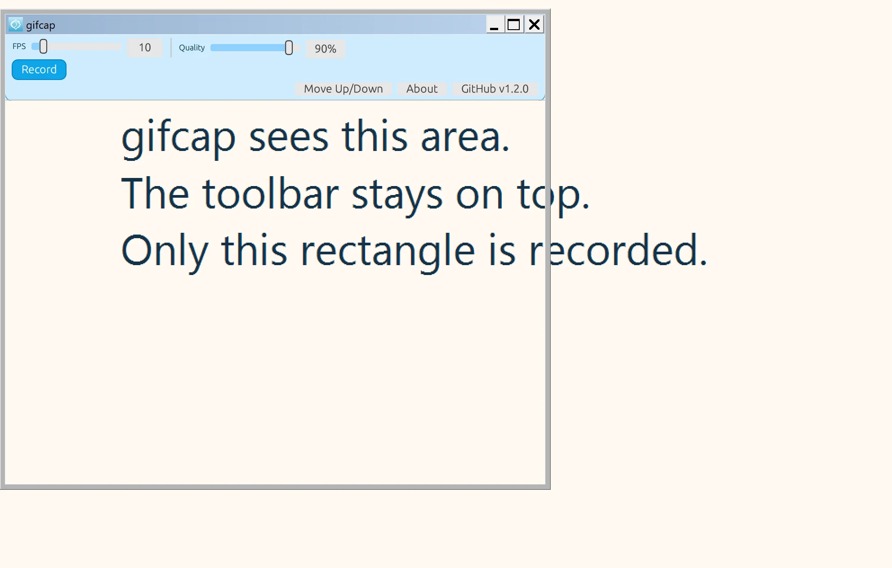

Область
Измените размер окна. Запись берёт пиксели рядом с панелью.
Панель остаётся на экране. Под ней или над ней — прозрачное окно. Записывается только этот кусок, сразу в GIF.
Скачать для WindowsВерсия @@VERSION@@ · исходники MIT · программа с FFmpeg под LGPL

Нет записи всего экрана и нет сворачивания в трей. Окно остаётся там, куда вы его поставили.
Измените размер окна. Запись берёт пиксели рядом с панелью.
Кадры сразу пишутся в GIF. Палитра и прямоугольные отличия держат файл меньше без мыла.
Кнопка Screen сохраняет ту же область как PNG.
Размер: @@SIZE_ZIP@@ МБ
SHA-256: @@HASH_ZIP@@
Исходный код — MIT. В программе статически собран FFmpeg, поэтому файл программы под GNU LGPL 2.1 или новее. В архиве лежат COPYING, NOTICE и THIRD-PARTY.txt.